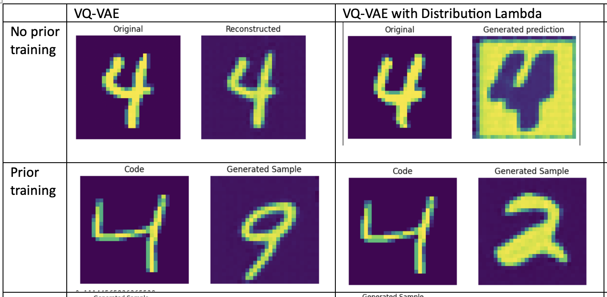

VQ-VAE results and study on Diffusion models : Week 3#
What I did this week#
I continued my experiments with VQ-VAE on MNIST data to see the efficacy of the Prior training in the generated outputs. The output of the encoder for every input image delivers a categorical index of a latent vector for every pixel in the output. As discussed in the previous blog post, the Prior has been trained separately using PixelCNN (without any conditioning) in the latent space.
If PixelCNN is a bunch of convolutions, then what makes it a generative model? This is an important question to ask and the answer to it is the sampling layer used on pixelCNN outputs during inference.
The official code in Keras uses a tfp.layers.DistributionLambda(tfp.distributions.Categorical) layer as its sampling layer. Without this sampling layer PixelCNN outputs are deterministic and collapse to single output. Also similarly, sampling layer alone, i.e., without any PixelCNN trained Prior, on the predetermined outputs of the encoder is deterministic. This is due to the fact that latent distances are correctly estimated by the pre-trained encoder and during inference categorical sampling layer would always sample the least distance latent, i.e., the one closest to the input.
Therefore, the autoregressive nature of PixelCNN combined with a sampling layer for every pixel delivers an effective generative model. The outputs for all my experiments are shown in the image below -
{kind=link}
Based on qualitative analysis, PixelCNN outputs may require some extra work. This leads me to the next step in my research - to explore Diffusion models. The first breakthrough paper on Diffusion models is by DDPM - Denoising Diffusion Probabilistic models. Inspired by previous work on nonequilibrium thermodynamics, they show that training diffusion models while maximizing the posterior likelihood in an image generation task is mathematically equivalent to denoising score matching.
In simple terms, there are two processes in diffusion modelling - forward & reverse. Forward process iteratively produces noisy images using noise schedulers. This can be reduced to one step noisy image through reparametrization technique. In the reverse process, a U-Net is trained to estimate the noise in the final noisy image.
During inference/sampling, noise is iteratively estimated and removed from a random noisy image to generate a new unseen image. The L2 loss used to estimate the noise during training is mathematically equivalent to maximizing the posterior likelihood i.e., maximizing the distribution of final denoised image. You can find more details in this paper.
Stable Diffusion paper moves the needle by making the diffusion model more accessible, scalable and trainable using a single Nvidia A100 GPU. Earlier diffusion models were difficult to train, requiring 100s of training days, instability issues and restricted to image modality. Stable Diffusion achieved training stability with conditioning on multimodal data by working in latent space. A pre-trained image encoder such as VQ-VAE is used to downsample and extract imperceptible details of an input image. These latents are used to train Diffusion model discussed above. Doing so separates the notion of perceptual compression and generative nature of the whole network. Later the denoised latents can be passed through a VQ-VAE trained decoder to reconstruct images in pixel space. This results in a less complex model, faster training and high quality generative samples.
What is coming up next week#
Setting up of Big Red 200 HPC account. Training Diffusion model using MNIST latent from VQ-VAE in tensorflow without any conditioning.